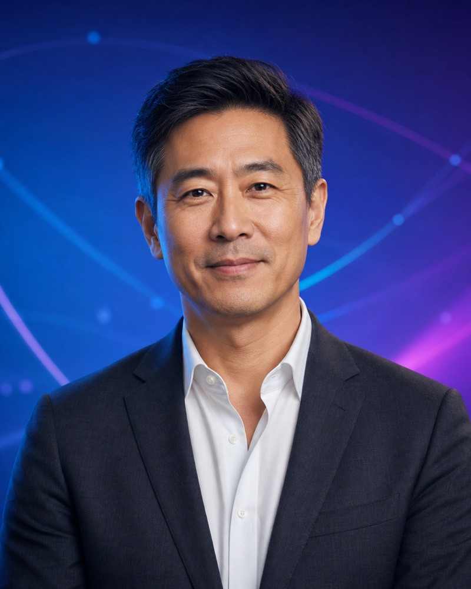
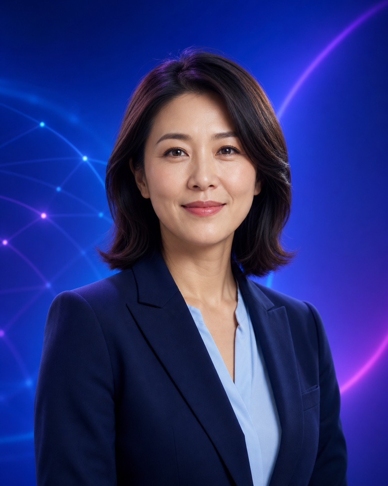
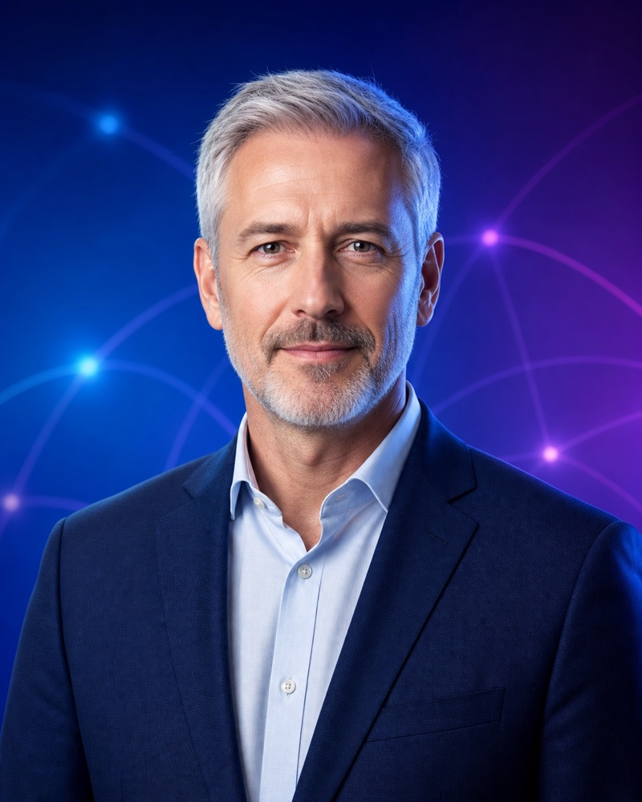

AI-Driven 6G Era in 2030s
How AI-native connectivity will reshape society, industry and everyday life.
EVENT OVERVIEW
As the global telecommunications industry stands at the threshold of a new technological era, the 2026 6G Summit Taipei convenes leading voices from academia, industry, and government to chart the path toward an AI-Native 6G future.
Taking place on September 23–24, 2026, at the Taipei International Convention Center, the summit examines how artificial intelligence will reshape the sixth generation of wireless communications and transform key sectors.
EXPLORE THE PROGRAM →KEY THEMES
Two days of policy, technology and industry insight focused on moving 6G from vision toward implementation.
How AI-native connectivity will reshape society, industry and everyday life.
The enabling technologies and emerging markets driving 6G deployment.
Global alignment, standards evolution and the technical foundations of 6G.
Pilot projects, commercial readiness and international industry cooperation.
ORGANIZERS & PARTNERS
 Organizer
Organizer Co-organizer
Co-organizer Co-organizer
Co-organizer Co-Organizer (Gold Sponsor)
Co-Organizer (Gold Sponsor) Co-Organizer (Gold Sponsor)
Co-Organizer (Gold Sponsor) Co-Organizer (Gold Sponsor)
Co-Organizer (Gold Sponsor) Silver Sponsor
Silver Sponsor Silver Sponsor
Silver Sponsor Bronze Sponsor
Bronze Sponsor Bronze Sponsor
Bronze Sponsor Bronze Sponsor
Bronze Sponsor Bronze Sponsor
Bronze Sponsor Bronze Sponsor
Bronze SponsorSPEAKERS INCLUDE
Distinguished experts from Europe, North America, Japan, Korea and Taiwan will address the technical, regulatory and commercial path to 6G.

University of Cambridge
Founder & CSO, pureLiFi

XGMF

Next G Alliance
Steering Group Chair
Industrial Technology Research Institute
Speaker portraits shown are simulated placeholders for layout preview only and do not depict the named speakers. Official portraits will replace them after approval. Additional speakers and representatives will be announced as confirmations are completed.
AGENDA
Program and speakers are subject to change.
VENUE
1, Hsin-Yi Road, Section 5
Taipei 11049, Taiwan
MRT
Take the Tamsui–Xinyi Line (Red Line) to Taipei 101 / World Trade Center Station, Exit 1.